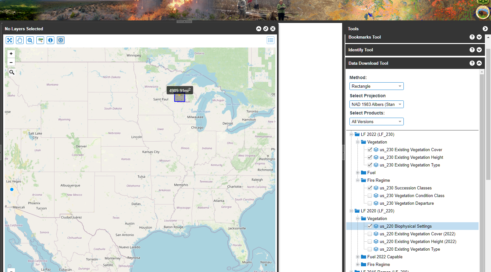

3 Get LANDFIRE data
3.1 What you will learn here
Getting data is a key first step in landscape analysis. While LANDFIRE offers many key datasets, and has multiple ways to access the data finding it and getting it downloaded can be confusing. Here we:
- briefly describe the different ways to get LANDFIRE data
- showcase getting data with the LANDFIRE Map Viewer
- explore the structure of the files you get from LANDFIRE
3.2 Four ways to get LANDFIRE data
There are four ways to get LANDFIRE data (that we know of-there may be more!):
- LANDFIRE Map Viewer (LFMV). This site allows you to explore LANDFIRE datasets online, and to download them based on a rectangle you draw, a polygon you draw, a template (e.g., a state, from a dropdown) or a GeoJSON. We will highlight obtaining data from the LFMV below. This method is most useful if you need several datasets and/or focus on one area and/or have data storage limitations.
- Download Mosaics for CONUS, HI or AK or the U.S. Insular Areas. Obtaining these mosaiced datasets are best for users who have several landscapes of interest and/or have plenty of storage space.
- Stream data with the LANDFIRE Product Service or by webservice. These options are good for users who do not want to store data locally. To learn more about these options check out the “How to use LANDFIRE’s Streaming Options to access LANDFIRE data video.
- The rlandfire R package, by Mark Buckner who is currently (as of January 2024) a PhD candidate at Cornell University. This package allows you to import LANDFIRE data directly into your R environment.
3.3 The LANDFIRE Map Viewer
For many users the LFMV will be the best way to get LANDFIRE data. Once you get the knack of it, obtaining data will be quick and easy. We highlight a few tips below.
- First you will go to https://www.landfire.gov/viewer/.
- We like to turn off the display of LANDFIRE’s Existing Vegetation Type data so that we can see the basemap. To do this uncheck the box on the left hand banner as highlighted below in the “LFMV initial screen” screenshot below.
- You will need to select an area to limit the data download. On the right banner there is a Method dropdown, with multiple options. Here we will draw a rectangle. Once your method is complete (e.g., drawing a rectangle) you will be presented with options for Projection and versions. Because we will be selecting data from multiple versions, and are happy with the default projection we will not change these options. See “Drawing rectangle” screenshot below.
- After you select your area, available datasets will be listed below, nested by version and category. In the “Select datasets” screenshot we demonstrate this.
*Note: all datasets are not available with every version. Go here to begin learning about versions. - Once all desired datasets are selected, scroll down to enter your e-mail address. Soon after doing that and clicking the “Download” button you will receive an email announcing that your data is ready for download. Follow the instructions in that email.
3.3.0.1 Screenshots for using the LFMV
LFMV initial screen
Drawing rectangle

Selecting Datasets

3.4 After download happens
As noted above after you click the ‘Download” button on the LFMV you will eventually receive an email with instructions. The zipped data will likely land in your ’Downloads’ directory. Then what?
Essentially you will extract the data to a useful location, then hop to the “Explore the spatial data” and “Make a map with LANDFIRE data” pages on this site.